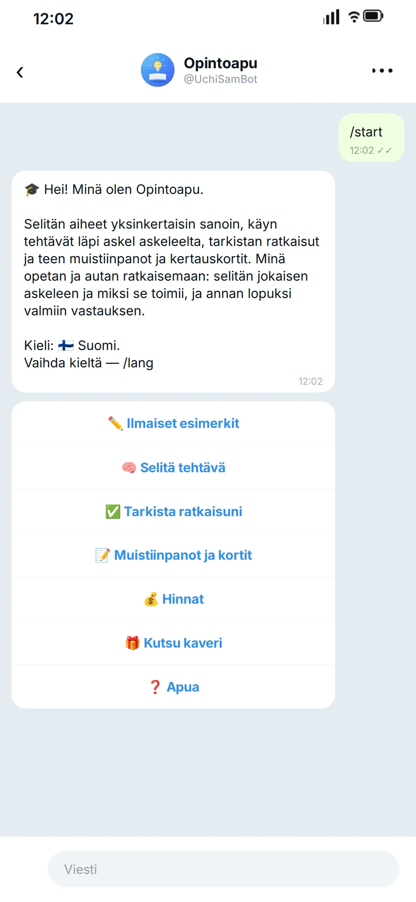
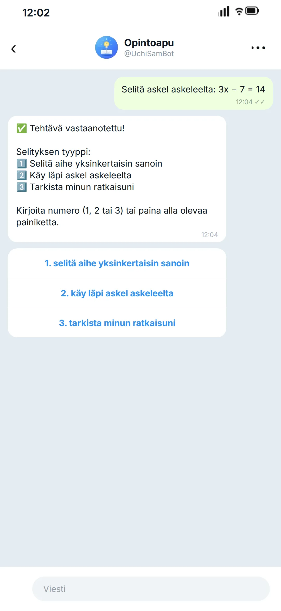
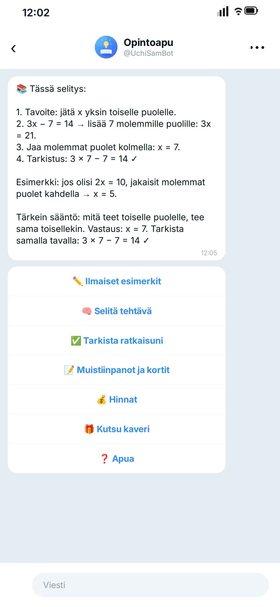

Kotitehtävät, jotka vihdoin aukeavat
UchiSamBot purkaa kotitehtäväsi askel askeleelta, selittää aiheen yksinkertaisin sanoin, tarkistaa vastauksesi ja tekee kertauskortit — suoraan Telegramissa, mihin aikaan tahansa.
Näin se toimii
- 1
Avaa botti
Paina nappia ja valitse Aloita — mitään ei tarvitse asentaa.
- 2
Lähetä tehtävä
Kirjoita kysymyksesi tai ota kuva tehtävästä.
- 3
Saat selityksen
Botti käy tehtävän läpi askel askeleelta ja selittää jokaisen vaiheen.
- 4
Tarkista itse
Pyydä tarkistamaan ratkaisusi tai hae tiivistelmä ja kertauskortit.
Mitä botissa on
Selitys askel askeleelta
Jokainen vaihe selitetään — ei pelkkä loppuvastaus.
Tehtävät kuvana
Ota kuva tehtävästä suoraan oppikirjasta.
Yksinkertainen kieli
Yksinkertaisesta vaikeampaan, kuin kärsivällinen opettaja.
Ratkaisun tarkistus
Löytää juuri sen kohdan, jossa virhe on.
Tiivistelmät ja kertauskortit
Lyhyet kertauskortit ennen koetta.
Mihin aikaan tahansa
Ei tarvitse odottaa opettajaa, kun jäät jumiin.
Ei pelkkiä vastauksia. Opit ratkaisemaan seuraavan itse.
Askel askeleelta etenevät selitykset näyttävät, miksi kukin vaihe toimii, joten pystyt ratkaisemaan samantapaisen tehtävän itse.
Kouluaineet
Ja mikä tahansa muu koulukysymys, johon jäät jumiin.
Miltä keskustelu näyttää
Tältä selitys näyttää — botti toimii 10 kielellä.



Hinnat
Maksu Telegram-tähdillä suoraan keskustelussa.
Ensimmäiset 30 selitystä
Kokeile bottia — maksua ei tarvita.
5 selityksen paketti
24 tähteä selitykseltä — säästä 20 %.
15 selityksen paketti
20 tähteä selitykseltä — säästä 33 %.
Yksittäinen selitys — 30 tähteä.
Kutsu kaveri — kun hän saa ensimmäisen selityksensä, saat yhden ilmaisen selityksen lisää. Yhteensä enintään 20 bonusselitystä.
Usein kysytyt kysymykset
Onko tämä lunttaamista?
Ei. Botti selittää ja opettaa: se näyttää jokaisen vaiheen ja säännön sen takana, jotta osaat ratkaista seuraavan tehtävän itse.
Mitä aineita se kattaa?
Matematiikka, englanti, fysiikka, kemia ja historia — ja oikeastaan mikä tahansa koulukysymys, johon jäät jumiin.
Millä kielillä se puhuu?
Kymmenellä kielellä: venäjä, englanti, espanja, portugali, hindi, indonesia, turkki, vietnam, ukraina ja suomi. Voit vaihtaa kieltä milloin tahansa komennolla /lang.
Miten maksan?
Telegram-tähdillä suoraan keskustelussa. Ensimmäiset 30 selitystä ovat ilmaisia; sen jälkeen voit ostaa yhden selityksen tai paketin.
Tarvitseeko jotain asentaa?
Ei. Kaikki toimii Telegramissa — puhelimessa tai tietokoneessa.
Mitä Telegram-tähdet ovat?
Tähdet ovat Telegramin oma sisäinen valuutta. Lataat niitä tilillesi Telegramissa tavallisella maksulla (kortti, App Store tai Google Play) ja maksat selitykset suoraan keskustelussa. Tilausmaksua tai automaattista veloitusta ei ole — maksat vain silloin, kun itse päätät. Telegram Premiumia ei tarvita.
Mistä saan tähtiä?
Suoraan keskustelussa: kun painat selityksen ostamista, Telegram avaa maksuikkunan ja tarjoaa tähtien lataamista, jos saldo ei riitä. Saldo säilyy Telegram-tililläsi ja toimii kaikissa boteissa, jotka hyväksyvät tähtiä.
Kuinka kauan selityksen saaminen kestää?
Yleensä alle minuutin: lähetä tehtävä, niin selitys tulee keskusteluun — tavallisesti 5–60 sekunnissa. Jos palvelin on ruuhkassa, se voi kestää jopa kaksi minuuttia.
Mitä jos selitys epäonnistuu?
Yritä uudelleen parin minuutin kuluttua — lyhyitä ruuhkia sattuu. Jos se ei onnistu, kirjoita meille alla olevalla lomakkeella — selvitämme asian.
Miten se eroaa tavallisesta tekoälychatista?
Toisin kuin tavallinen chatbotti, tämä etenee opetusmenetelmällä: jokainen selitys käy tehtävän läpi askel askeleelta ja kertoo, miksi kukin vaihe toimii — ja lopuksi saat valmiin vastauksen, johon voit verrata omaa ratkaisuasi. Emme kerää henkilötietoja: tallennamme vain tehtävän tekstin ja Telegram-nimimerkkisi, jotta selitys ja historiansi pysyvät sinulla.
Voivatko vastaukset olla väärin?
Selitykset tuottaa tekoäly, joten virhe on mahdollinen. Jokainen vaihe näytetään, joten voit verrata päättelyä oppikirjaan tai kysyä opettajalta. Jos vastaus näyttää väärältä, lähetä se meille lomakkeella — luemme jokaisen viestin.
- Ei rekisteröitymistä eikä täytettäviä lomakkeita — botti ei koskaan kysy nimeä, puhelinnumeroa tai sähköpostia. Tallennamme muutaman Telegram-profiilin julkisen osan tiedon; luettelo on tietosuojakäytännössä.
- Ei asennettavaa, ei rekisteröitymistä, ei nimeä: kaikki tapahtuu Telegramissa.
- Emme kerää henkilötietoja emmekä koskaan kysy nimeä, puhelinta tai sähköpostia.
- Voit pyytää tietojen poistamista milloin tahansa — vanhemmat voivat tehdä pyynnön lapsensa puolesta.
Jäitkö juuri nyt jumiin tehtävän kanssa?
Lähetä se botille — ensimmäiset 30 selitystä ovat ilmaisia.
Avaa TelegramissaKysyttävää tai palautetta?
Kirjoita meille — viestisi menee tiimillemme, ja vastaamme sinulle sähköpostitse. Ei roskapostia, ei postituslistoja.
Kiitos! Saimme viestisi ja vastaamme sähköpostiisi.
Viestiä ei lähetetty. Tarkista verkkoyhteytesi ja yritä uudelleen — tekstisi on yhä kentässä.
Lomake on juuri nyt ruuhkassa, joten viestiä ei lähetetty. Yritä minuutin kuluttua — tekstisi on yhä kentässä.
Käytämme sähköpostiasi vain tähän viestiin vastaamiseen. Tietosuojakäytäntö (EN/RU)